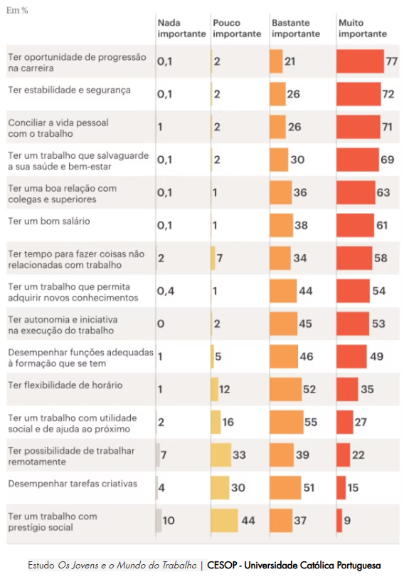

Expectativas dos jovens e oportunidades de trabalho estão desalinhadas
Francisco Porto Fernandes, presidente da Federação Académica do Porto, considera que a dificuldade não é arranjar emprego, mas encontrar um que corresponda às expectativas dos jovens licenciados.
Por Maria Dias e Joana Araújo Cardoso
Francisco Porto Fernandes, presidente da FAP | JPN
Segundo Francisco Porto Fernandes, os jovens prestes a entrar no mercado de trabalho valorizam empregos que lhes permitam “conciliar as exigências profissionais com a vida pessoal”. Desta forma, empresas que ofereçam flexibilidade de horários, juntamente com oportunidades de crescimento e aprendizagem contínua, têm maior capacidade de atingir as expectativas dos jovens.
«Esta geração procura não apenas um emprego, mas condições que lhes garantam estabilidade financeira, qualidade de vida e uma progressão profissional alinhada às suas ambições.»
Um inquérito realizado pela Universidade Católica Portuguesa em 2024 confirma que estes são os aspetos mais valorizados pelos jovens. Neste estudo, progressão na carreira, estabilidade e segurança e equilíbrio entre vida pessoal e profissional foram os fatores considerados mais importantes pelos inquiridos.

Estudo "Os Jovens e O Mundo do Trabalho" CESOP - Universidade Católica Portuguesa | PúblicoA nova geração exibe uma “preocupação significativa” em relação ao estado do mercado de trabalho. Assim, questiona-se se será possível manter um equilíbrio entre a vida profissional e pessoal nestas circunstâncias.
«O mercado de trabalho, de modo geral, ainda não está plenamente preparado para responder às expectativas da geração mais qualificada de sempre.»
Mercado sem estrutura
A falta de condições que satisfaçam os jovens profissionais conduz a que estes permaneçam por menos tempo na mesma empresa. Conforme o relatório Os jovens no mercado de trabalho em Portugal, publicado pelo Observatório do Emprego Jovem (OEJ), os jovens estão associados a contratos temporários. Uma das razões apontadas para este fenómeno é a falta de interesse dos jovens em ter um vínculo estável.
O presidente da FAP explica que salários baixos, redução no poder de compra e dificuldades no acesso à habitação são razões para que o trabalho esteja reduzido a “um meio de sobrevivência”. Estas circunstâncias fazem com que diversos jovens encarem a qualidade de vida como uma prioridade “em detrimento de uma dedicação total ao trabalho”.
Além disso, a recusa das empresas em se adaptarem às expectativas dos jovens e a ausência de políticas adequadas impacta diretamente o desenvolvimento socioeconómico do país. Como solução, Francisco Porto Fernandes propõe a adoção de políticas que valorizem o talento, assegurem progressão na carreira e ofereçam estabilidade. Destaca ainda a importância de modelos de trabalho flexíveis e uma remuneração digna, que corresponda às qualificações dos profissionais. Estas medidas visam ajudar os trabalhadores a adaptarem-se às mudanças do mercado, assim como promover estabilidade e a saúde mental dos profissionais (ver artigo).
Francisco Porto Fernandes alerta que, caso o estado do mercado não se altere, haverá consequências: “Se as condições laborais não forem significativamente melhoradas, o trabalho continuará a ser visto como um instrumento secundário, em vez de um elemento central na sua identidade e realização”.